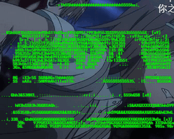
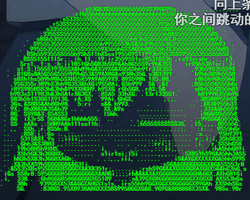
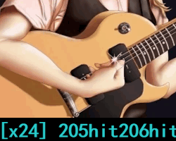
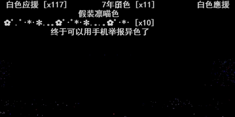
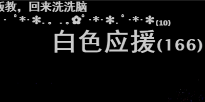
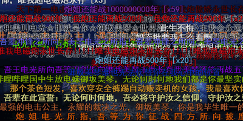
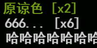
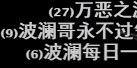
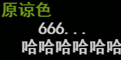

pakku
 by @xmcp
by @xmcp
| 弹幕合并 |
合并 秒之内的重复弹幕 * 在低配电脑中，超长（大概 60 秒以上？）的阈值可能会导致程序运行缓慢 根据编辑距离判断不完全一致但内容相近（例如有错别字）的弹幕 * 会误伤少量内容相似的弹幕，以计数君为主。 感谢 @dramforever 根据 2-Gram 频率向量的夹角判断不完全一致但内容类似的弹幕 * 误伤较多，除非对编辑距离算法的效果非常不满意，否则请谨慎选择“强力”。 感谢 @fanthos |
| 弹幕套路 |
满足同样特征的弹幕，即使内容不同也会被合并：
"
对 "
" |
| 例外项 |
你可以设置基于弹幕内容的白名单，属于白名单的弹幕永远不会被合并： 高级弹幕可能包含排版和动画，合并后可能影响高级弹幕的表现效果   底部弹幕可能包含字幕、歌词、计数君，你可能不希望它们被合并 * 选中后，所有 底部弹幕都不会被合并，请谨慎选择。

|
| 实验室 |
超过10条弹幕合并后字号将相应变大，避免内容被忽略   如果视频中瞬时弹幕密度过大，将动态减小字号，避免遮挡画面

将会过滤包含 * B站移除“播放器控制API”开关后的替代选项，会误伤部分代码弹幕游戏。 阻止播放器通过 WebSocket 更新在线人数和实时弹幕 * 观看视频时将不会动态更新弹幕，也不会显示在线人数。可能导致各种问题，请谨慎使用。
觉得这些功能很赞？
请把 pakku ( 想添加更多功能？ 把你的脑洞 知乎私信给开发者 或者 丢到 GitHub 上 |
| 显示设置 |
，仅当数字大于 时显示    在右上角的 pakku 图标上显示合并了多少弹幕 * Tips: 在视频页面点击 pakku 图标可以查看过滤弹幕的详细信息
|
| 其他 |
在弹幕列表中点击即可显示这条弹幕的详细信息 * 查看弹幕发送者功能由 Bilibili 工具箱 提供，注册时间较新的用户可能没有收录。 pakku 不支持B站 Flash 播放器，检测到 Flash 播放器时将给出提醒 也许可以帮你一把 * 你的所有设置，包括 弹幕套路 和 白名单，都将会被重置为默认值。 |


请使用 哔哩哔哩 HTML5 播放器 / 在 GitHub 开放源代码 / 如有问题请 去 GitHub 提交 Issue 或 知乎私信开发者 / 使用 GPL 3.0 协议